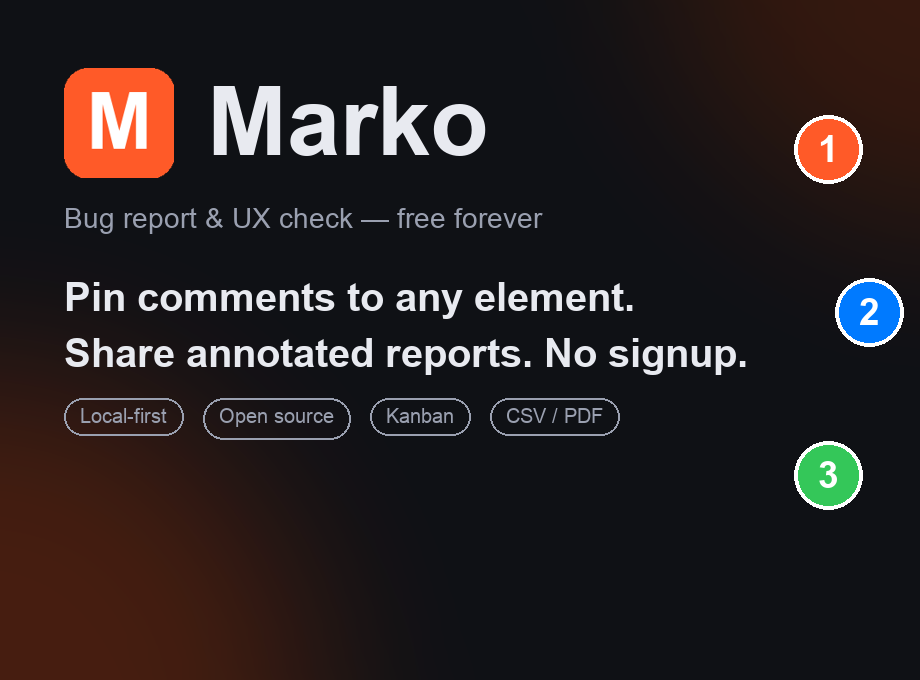

Marko is the free, local-first website review tool. Pin comments to any element, capture annotated screenshots, and share polished reports — no signup, no server, no fees.
MIT-licensed · zero telemetry · everything stays on your device

The full workflow, step by step. No magic, no hand-waving.
1440 × 900) appears top-right.One extension replaces screenshot tools, spreadsheets, and back-and-forth email threads.
Pins lock onto page elements and stay put through scrolling, resizing, and reloads.
Comment threads with @mentions, emoji, image attachments, and resolve states.
Arrows, boxes, pen, text, and a px ruler — captured with OS, browser, and viewport metadata.
Drag reports between severity columns. Filter by status, device, assignee, and due date.
Element, typography, and color inspectors with one-click copy CSS and selector.
Everything lives in your browser. Optional self-hosted backend for team links.
Marko ships as an open-source package while the Chrome Web Store listing is in review.
Download the latest release zip and unzip it.
Open chrome://extensions in Chrome.
Paste it into the address bar — Chrome blocks direct links to it.
Turn on Developer mode (top-right toggle).
Click Load unpacked and select the unzipped folder.
Pin Marko to your toolbar, open any site, press Alt+M. Done.
Marko is local-first by design — sharing is always an explicit action you take.
Install and start reviewing. No signup wall, ever.
Zero analytics, zero tracking, zero external requests by default.
Reports and screenshots live in Chrome's storage on your device.
MIT license. Audit every line on GitHub.
Yes — free forever, for everyone. No trial, no pro tier, no seat licenses. It's MIT-licensed open source.
Four ways: a self-contained HTML file that opens in any browser (no extension needed), a compressed share link for other Marko users, PDF/CSV exports, or — for teams that want real short links — point Marko at your own tiny backend (a reference server ships in the repo).
No. The standalone HTML export and PDF contain everything — screenshot, pins, comments, and metadata.
None. There is no server to send it to. Read the privacy policy — it's one page.
Chrome and Chromium-based browsers (Edge, Brave, Arc, Opera) with Manifest V3 support.
Yes — share project links or files, assign pins to teammates, @mention them in comments, and track resolve states. For always-live team links, self-host the optional backend (one Node file, one dependency).